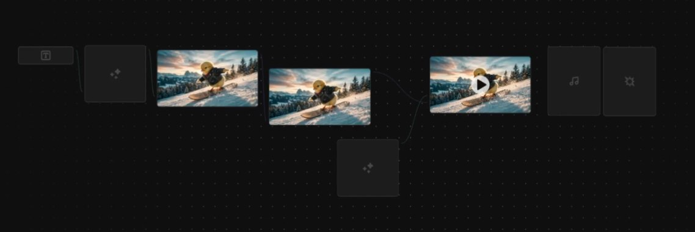
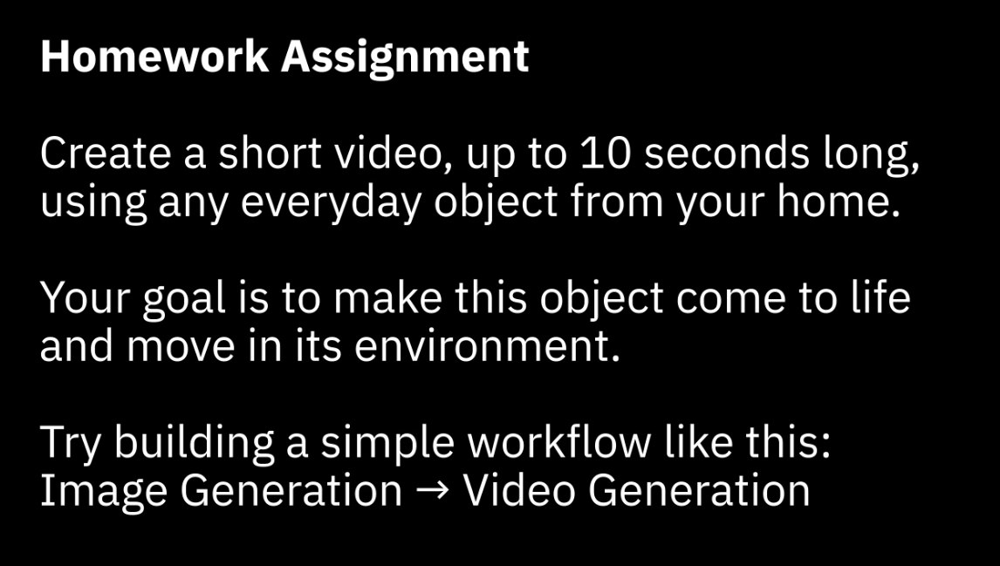
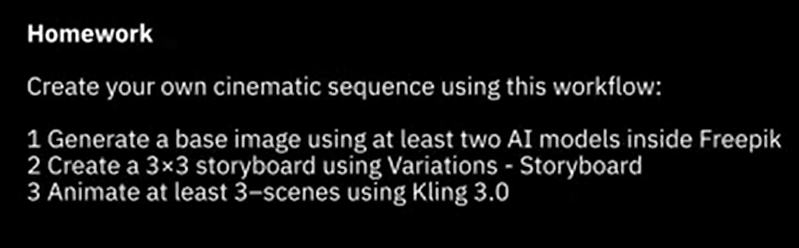

✅ Checklist de Qualidade
Antes de qualquer entrega, rode os 10 itens críticos de qualidade. Cada um, isoladamente, é capaz de comprometer a obra inteira.
✅ Os 10 Críticos
- 1.Personagem visualmente consistente ao longo de todas as cenas
- 2.Câmera com movimentos intencionais e narrativos
- 3.Áudio sincronizado com o vídeo, sem drifts
- 4.Voz inteligível em toda a duração do filme
- 5.Música nunca compete com a voz
- 6.SFX presentes nos momentos certos, em volume adequado
- 7.3 atos narrativos claros e bem proporcionados
- 8.Continuidade visual e color grading uniformes
- 9.Sem artefatos visíveis de IA (deformações, glitches)
- 10.Final com tempo suficiente para a emoção decantar

Revisão final no painel do Freepik antes do export e compartilhamento
📐 Formatos de Saída
Cada plataforma exige um aspect ratio diferente. Exporte o seu filme em múltiplos formatos para alcançar todos os destinos — cada versão pode exigir reenquadramento via Clip Editor.
16:9
YouTube, Vimeo, TVs
Formato cinematográfico padrão. Entregue sempre uma versão master neste aspect ratio.
9:16
Stories, Reels, TikTok
Vertical mobile-first. Recorte central com personagens centralizados.
1:1
Feed Instagram, LinkedIn
Quadrado. Bom para teasers e pílulas curtas extraídas do filme principal.
💾 Salvando como Workflow App
O Spaces permite transformar seu pipeline em Workflow App — uma ferramenta reutilizável onde você (ou clientes) inserem inputs simples e recebem o filme final automaticamente. É a maior alavanca de produtividade do Freepik.
Identifique inputs reutilizáveis
Roteiro, prompt principal, voz escolhida — tudo que muda entre filmes vira input público do app.
Salve como Workflow App
No menu do Spaces, escolha "Save as App". Defina nome, descrição e ícone.
Compartilhe ou reuse
Use o app no seu próximo filme em segundos, ou compartilhe com clientes para auto-atendimento.
🔄 Versões para Clientes
Entrega profissional não é um arquivo solto — é um pacote organizado com versões claras: bruto, finalizado e variações por formato. O cliente sempre encontra o que precisa.
Bruto
Master 16:9 sem watermark, full quality, para arquivo do cliente. ProRes ou H.264 alto bitrate.
Finalizado
Versão pronta para web, 1080p H.264, 8-12 Mbps. O arquivo principal de entrega.
Variações
9:16 e 1:1 reenquadrados, prontos para social. Inclua versões com e sem legendas.
🎯 Revisão Profissional
Olhe seu filme como um diretor olharia. Não como autor orgulhoso. Pergunte-se as cinco perguntas que separam amadores de profissionais.
🎯 As 5 Perguntas do Diretor
- 1."Um espectador sem contexto entende a história?" Se precisa explicar, falta clareza.
- 2."Qual é a emoção dominante de cada cena?" Se você não sabe responder, o espectador também não vai sentir.
- 3."Há algum corte que poderia ser eliminado sem perda?" Se há, corte. Sempre.
- 4."O som contribui ou só preenche?" Música decorativa enfraquece. Música funcional eleva.
- 5."O final me deixa sentindo algo?" Se você termina indiferente, o espectador termina pior.

Revisão final do filme — assistir com olhar crítico antes de declarar a obra como concluída
🏆 Entrega Final
A entrega organizada é o que separa um freelancer de um profissional. Pasta nomeada, créditos incluídos, link compartilhável. Detalhes simples que comunicam cuidado.
📁 Estrutura de Entrega
NomeDoProjeto_FinalDelivery/
├── 01_Master/
│ └── projeto_master_16x9_4K.mp4
├── 02_Web/
│ └── projeto_1080p_h264.mp4
├── 03_Social/
│ ├── projeto_9x16_vertical.mp4
│ └── projeto_1x1_square.mp4
├── 04_Assets/
│ ├── poster.jpg
│ └── thumbnails/
└── README.txt (créditos, ficha técnica, link)

Compartilhamento e exportação final — o último clique antes do filme estar pronto para o mundo
💡 Dica Final
Sempre inclua um README com a ficha técnica: título, duração, formato, software usado (Freepik), créditos e link compartilhável. Isso transforma uma pasta de arquivos em um produto de entrega profissional.
🏆 Parabéns — Curso Concluído!
Você acabou de completar o Freepik Film — o curso completo de cinema com IA generativa. Da intenção narrativa aos pipelines avançados de produção, do controle de câmera ao Spaces, da consistência de personagem à entrega profissional, você dominou todo o ciclo criativo de um filme feito com IA.
🎓 Sua Jornada Completa
- ✓Trilha 1 — Fundamentos: a linguagem do cinema, prompts intencionais
- ✓Trilha 2 — Recursos: as ferramentas do Freepik exploradas a fundo
- ✓Trilha 3 — Spaces: o canvas visual para construir pipelines
- ✓Trilha 4 — Câmera: o vocabulário completo de movimentos
- ✓Trilha 5 — Produção: consistência, character sheets, prompts avançados
- ✓Trilha 6 — Filme Completo: da pré-produção à entrega profissional
🎬 O Que Você Sabe Agora
Você não é mais "alguém que mexe com IA". Você é um diretor de cinema que usa IA como ferramenta. A diferença é abismal — e ela só fica clara quando você compara seu primeiro vídeo gerado com o filme que você acabou de entregar.
A tecnologia vai mudar. Os modelos vão melhorar. Mas os princípios cinematográficos que você aprendeu aqui vão te servir por décadas, em qualquer ferramenta que vier no futuro. Cinema é cinema — a câmera é só o instrumento.
🚀 Próximos Passos
- →Faça seu primeiro filme completo aplicando tudo que aprendeu
- →Compartilhe com a comunidade INEMA.CLUB e receba feedback
- →Construa seu Workflow App e use em projetos reais com clientes
- →Continue revisitando módulos específicos sempre que precisar
"A IA amplifica visão. E agora você tem a visão." — Freepik Film